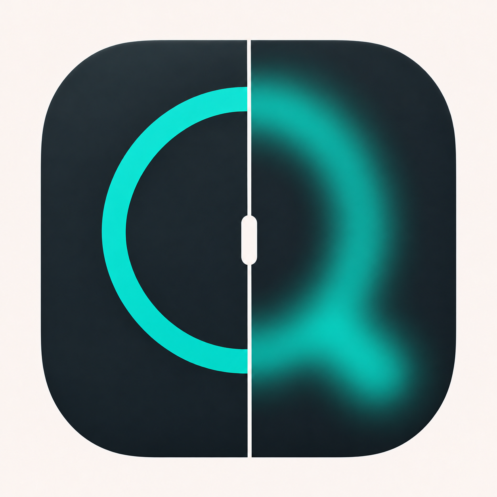

Assaf Shocher
Assaf ShocherOther
Tools, experiments, and games.
Tools

ImspectA desktop app for inspecting and comparing images on macOS and Windows. Synchronized split, flicker, and wipe views; pixel values, quality metrics, histograms, and image editing.
Download for macOS Windows (preview) GitHub source
macOS 13 or later · Apple Silicon
Windows 10 or 11 · x64 · previewPIA
Principal Investigator’s Assistant. A research workspace connecting people, projects, and deadlines, with an optional AI connection.
The demo uses fictional data; edits stay in your browser.
Games for kids
Kubi · Little Cube Coach
A picture-led Rubik’s Cube guide for kids, with a rotating 3D cube, slow repeating moves, and one-step-at-a-time controls. English and Hebrew.
Three Together · שלושה ביחד
58 cooperative puzzle rooms for two players sharing one keyboard.
Beam & Balance
Beam & Balance 3D
Number Tower